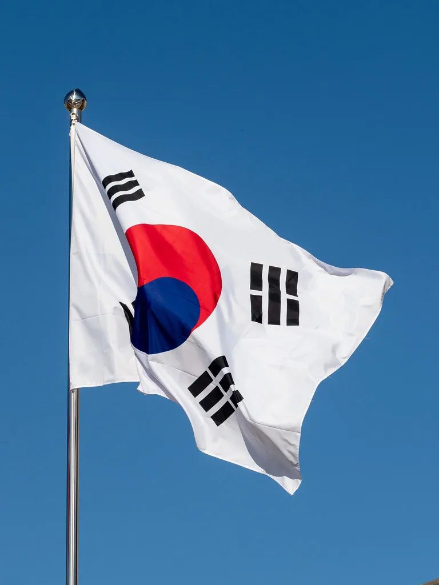

국민의힘 윤리위, 비당권파 의원 4명 중징계…"정적 제거" 반발
국민의힘 중앙윤리위원회가 20일 비당권파로 분류되는 현역 의원 4명에게 무더기 중징계를 내리면서 당내 갈등이 다시 격화되고 있다. 이번 징계로 조경태·진종오·권영진 의원 등 3명은 사실상 앞으로 1년 8개월 남은 2028년 4월 총선에서 국민의힘 후보로 출마할 수 없게 됐다. 6·3 지방선거 이후 이어져 온 당내 계파 갈등이 이번 징계를 계기로 새로운 국면에 접어들었다는 평가가 나온다. 정치권에서는 이번 조치가 단순한 개별 징계 사안을 넘어, 지도부와 비주류 사이의 힘겨루기가 본격화되는 신호탄이 될 수 있다는 관측도 나온다.
윤리위가 이날 의결한 징계 수위는 의원별로 차이가 크다. 조경태 의원은 당원권 정지 2년 6개월로 가장 무거운 징계를 받았고, 진종오 의원은 2년, 권영진 의원은 1년 6개월, 서범수 의원은 10개월의 당원권 정지 처분을 각각 받았다. 당원권 정지 기간이 1년을 넘는 조경태·진종오·권영진 의원 3명은 사실상 다음 총선까지 당의 공천을 받을 길이 막힌 셈이어서, 향후 정치 활동에 상당한 제약이 불가피할 전망이다.

징계 사유는 의원마다 다르다. 진종오 의원은 지난 6월 재보궐 선거를 앞두고 무소속으로 출마한 한동훈 의원을 도운 것이 문제 삼아져 제소됐고, 윤리위는 이를 이유로 당원권 정지 2년을 의결했다. 조경태 의원은 하반기 국회부의장 선출 과정에서 같은 당 박덕흠 의원을 비방했다는 이유로 제소돼 징계를 받았다. 권영진·서범수 의원에 대해서도 각각 별도의 제소 건이 접수돼 심의가 이뤄진 것으로 전해졌다. 윤리위는 각 사안을 개별적으로 심의한 결과라는 입장이지만, 징계 시점이 공교롭게 겹치면서 정치적 해석을 낳고 있다.
당사자들은 강하게 반발하고 있다. 진종오 의원은 "어떠한 해당행위도 하지 않았는데 윤리위가 사실관계에 대한 철저한 확인 없이 징계를 내렸다"고 주장했다. 서범수 의원도 자신의 페이스북에 "이번 윤리위 판단이 정치적으로 결을 달리하는 정적을 제거하는, 답은 정해져 있고 너는 대답만 하라는 식의 징계가 아니었기를 바란다"는 글을 올려 불만을 드러냈다.

이번 징계를 둘러싸고 당 안팎에서는 장동혁 대표 체제와 비당권파 간 갈등이 새로운 국면에 접어들었다는 분석이 나온다. 장 대표는 최근 '당협위원장 전면 교체' 카드까지 거론하고 나선 것으로 알려지면서, 이번 무더기 중징계가 비당권파를 겨냥한 전면전의 신호탄이라는 해석도 제기된다. 당 지도부는 이번 징계가 순수하게 개별 사안에 대한 절차적 판단이라는 입장이지만, 비당권파 진영에서는 계파 갈등의 연장선으로 받아들이는 분위기가 역력하다.
국민의힘 내부에서는 이번 사태로 6·3 지방선거 패배 이후 누적돼 온 계파 갈등이 다시 표면화될 수 있다는 우려가 커지고 있다. 일부 인사들 사이에서는 이번 징계를 계기로 비당권파 의원들이 대거 이탈하거나 독자 행보에 나설 수 있다는 관측까지 나오면서, 당 지도부가 내홍 수습보다 갈등을 더 키우고 있다는 비판도 제기된다. 반면 지도부 측 인사들은 당 기강을 바로 세우기 위해서는 불가피한 절차였다며 이번 결정을 옹호하고 있어, 당내 온도차가 뚜렷하다.
징계 대상 의원들은 재심을 청구하거나 추가 대응에 나설 뜻을 밝히고 있어, 이번 갈등이 단기간에 봉합되기는 어려울 것으로 보인다. 총선을 앞두고 당의 결속력이 시험대에 오른 가운데, 국민의힘이 내홍을 어떻게 수습해 나갈지 정치권의 관심이 쏠리고 있다.